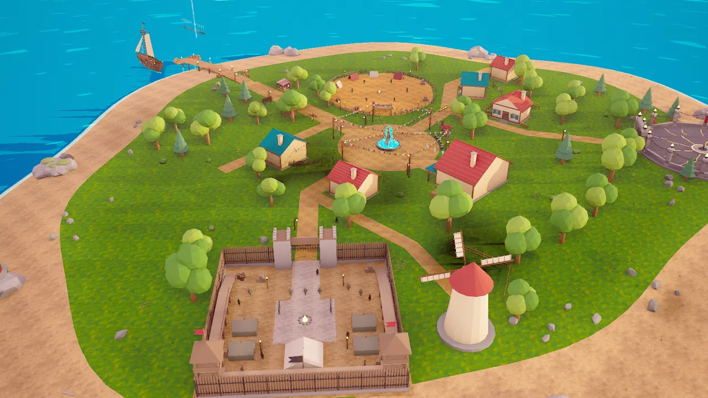

Accueil › Carte de l'archipel
Carte de l'archipel
L'archipel se parcourt en bateau, île après île. Voici la route dans l'ordre des niveaux.

Île des AlizésNiveaux 1 – 15 Citadelle de la MarineNiveaux 30 – 50
Citadelle de la MarineNiveaux 30 – 50 JungleNiveaux 60 – 80
JungleNiveaux 60 – 80 Dunes CalcinéesNiveaux 90 – 120
Dunes CalcinéesNiveaux 90 – 120 Port-BourrasqueNiveaux 125 – 180
Port-BourrasqueNiveaux 125 – 180 BrisegivreNiveaux 185 – 230
BrisegivreNiveaux 185 – 230 Colisée des MaréesNiveaux 235 – 245
Colisée des MaréesNiveaux 235 – 245
Les îles à venir n’apparaissent pas ici : voir À venir.